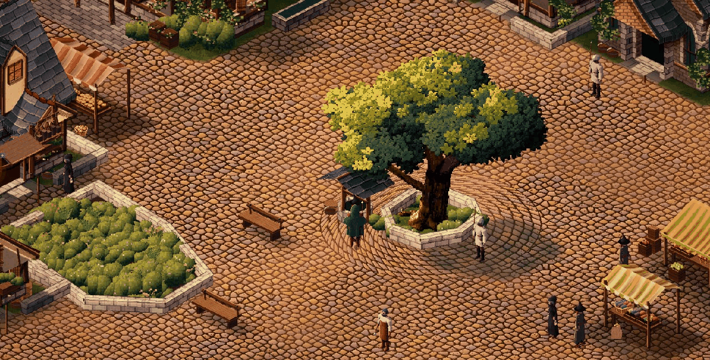
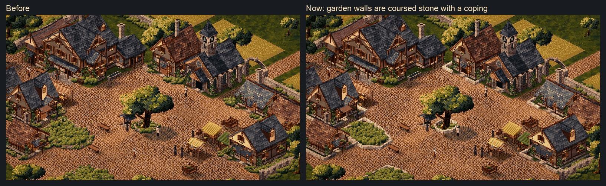
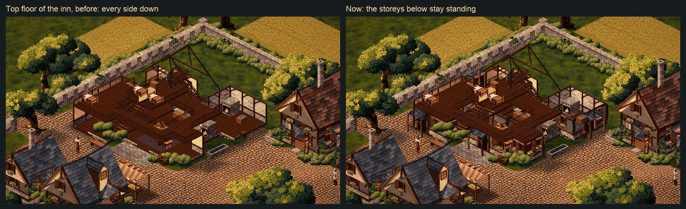
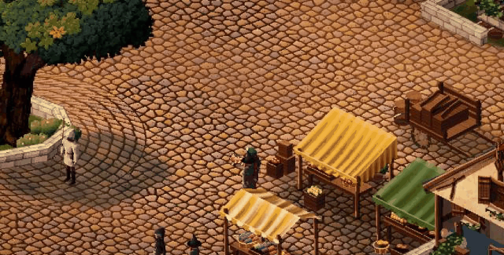
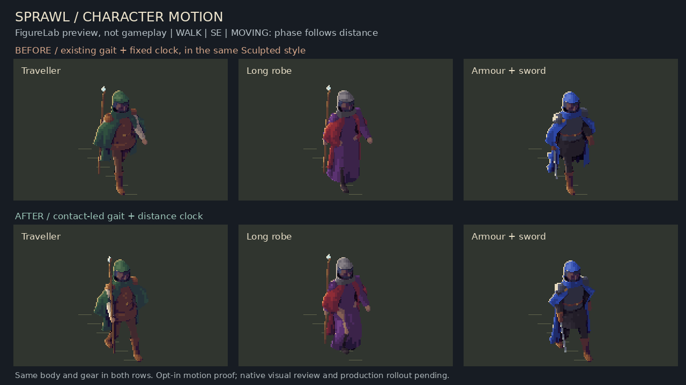
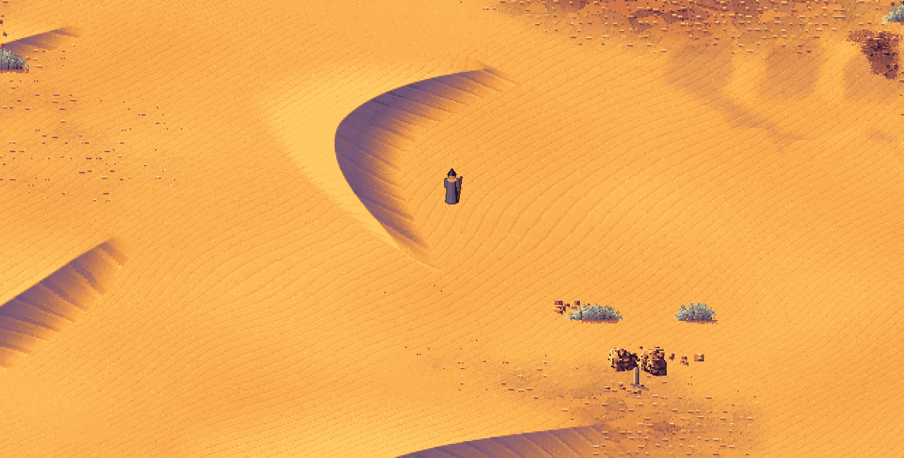
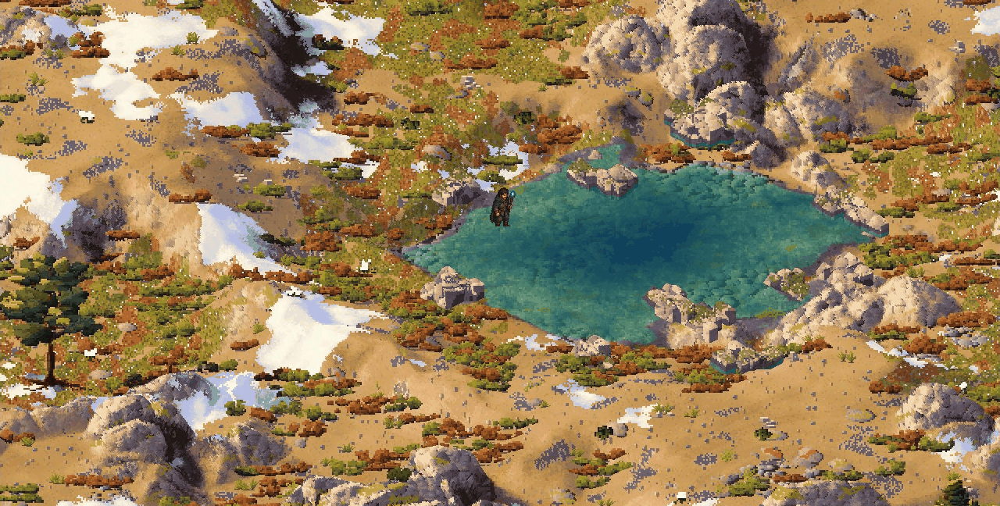
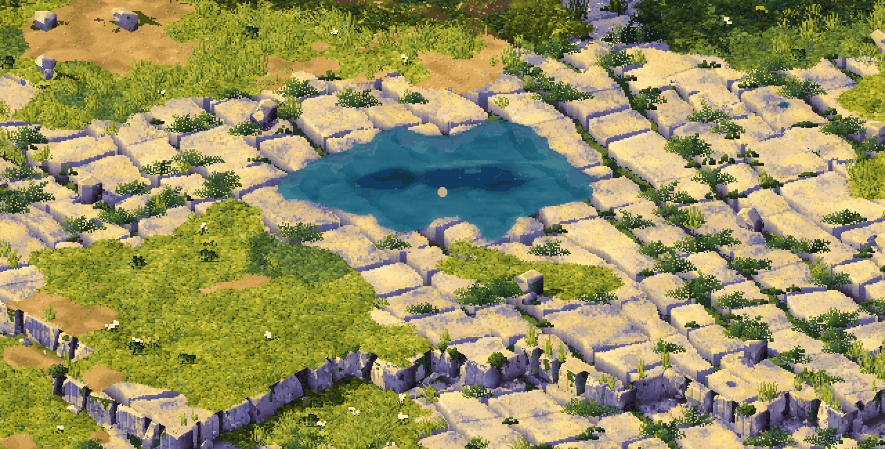
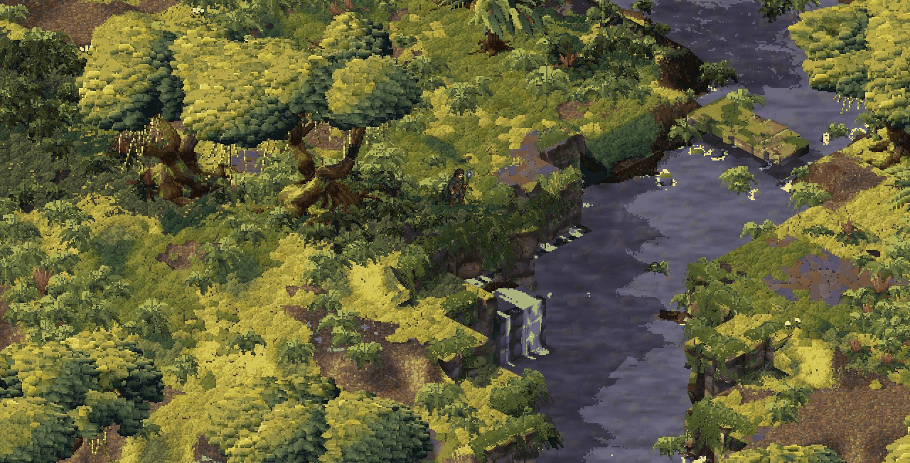
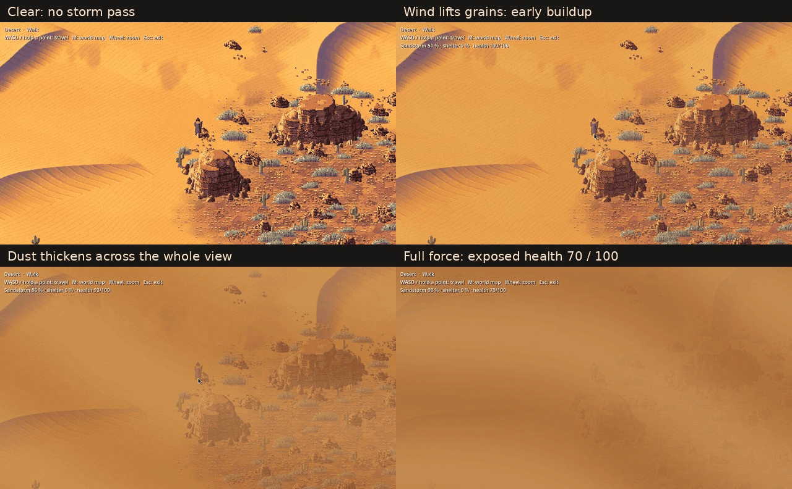

Day 24: the market town becomes the game
15 October 2026 · Day 24
Sprawl has a new home. You now arrive in a market town drawn in the new style, with an old tree and a well in the square, a church, a rambling inn, and houses with solid walls you can walk inside. The old painted hamlet is gone. Four more lands came true to their paintings, the desert gained sandstorms and dunes you can climb, and the character took the first step towards walking properly.

In the game: where every new game now begins. The square, the well under the old tree, the market, and the town's people about their day.
A town to start in
For three weeks the game began in Thornwick, a small hamlet drawn in the old painted autumn art. Meanwhile a market town was taking shape on the side, built entirely from the game's own code in the new Sculpted Pixels style: a winding old road with lanes branching off it, plots of different sizes, houses with plaster and timber, a stone church, and an inn that grew wings. This week that town became the game. Start a new game and a loading card says you are arriving at the market town; when it lifts, you are standing in the square in front of the well.
Getting there took a few things. The town had been an art study you looked at, not a place you played. It has the game's controls now, its music and its footsteps on stone and grass, and the well is solid, where before you could walk straight through it. It also had to be fast. The first version ran at two or three frames a second, because it rebuilt its whole picture, some 33,000 pieces, every single frame. Now the town keeps what it has drawn, packs its pieces onto shared pages, and bakes each finished layer into a single picture. Zoomed in, it runs at about 110 frames a second, and stepping through a door no longer freezes the screen for a third of a second.
Walls with weight
The houses used to be paper: walls drawn as thin lines, with doorways cut in them. Now every wall is a solid slab with real thickness. When you step inside, the roof and the near walls lift away and you see the cut edge of the masonry, like a doll's house with its front off. Garden walls are coursed stone with a coping along the top.

Before, and now. Garden walls became proper stone, and every house wall has thickness.
The inn is its own small world: a hall with a gallery around it, a kitchen wing, a smithy at the back, stables, and rooms up under the roof. You can climb both staircases. On the top floor the storeys below now stay standing around you, instead of every side dropping away at once.

The inn's top floor, before and after. The rooms below keep their walls.
Life in the square
Five sparrows, two rats and two cats live around the square. The sparrows peck about and scatter when you or a townsperson comes close. The rats keep to the shelter of walls, stalls and carts and dart across now and then, more often at night. The cats doze and prowl, and give chase when they spot a rat. They are drawn a little larger than life, because at true size they vanished into the cobbles.

Market day. A cat on patrol by the stalls.
The town has its own music now too: an eighty-second piece for harp, strings and glockenspiel called Lanterns in the Square, recorded from real instrument samples. Under it sits a bed of town life, with woodwork, the well, pottery and footsteps, that falls quiet after dark. Magic, which had been drowning out everything else, is a good deal quieter.
Goodbye, Thornwick
With the town in place, the hamlet went. Thornwick and the painted autumn and summer art it was drawn in are deleted, freeing up a great deal of space. Nothing from it was thrown away without a plan, though. Magic, the bag and character panel, the parish board, merchants, wolves, dungeons, swimming, saving and the mythic creatures all still work in an older test world, drawn with plain placeholder art, and each one is moving into the town in turn.
A first step towards walking well
The player's walk has always looked a little wrong, and this week we found out why. The legs stepped on a fixed timer, about eight frames a second, however fast you were actually moving. So the feet skated over the ground, and the footstep sounds ran on a clock of their own.
The new walk is led by the feet. Each foot plants and stays put on the ground while the body passes over it, and the cycle moves forward by distance walked, not by time. Stop against a wall and the legs stop too. Cast a spell mid-stride and the arms cast while the legs keep walking. The same walk fits every body, short or tall, slight or heavy, and every outfit from a traveller's coat to a long robe to armour.

The old walk on top, the new one below, on the same body and gear. This is from the figure lab; the new walk is not in the town yet.
That last line matters. The new walk works in the figure lab but has not yet been fitted to the player in the town. That is the very next job.
Four more lands from their paintings
Away from the town, four more lands were built to match their reference paintings, so ten of the world's lands now have their proper look.

The Desert: crescent dunes with violet shadowed faces, sandstone outcrops, scrub and saguaros.

The Alpine heights: a clear tarn among granite tors, scree, snow where it would lie, and pines.

The Karst: limestone pavement split into blocks, ferns in the cracks, and clear pools with stone sides.

The Cloud Forest: domed cloud oaks, lobed moss, ferns, and white water stepping down between shelves.
The Beach also had a third round. The dunes now have ridges with bare dips between them, and the sea holly grows in leafy cushions.
The desert comes alive
The desert is more than a backdrop now. The dunes are real ground: you climb them, and walk higher as you go. Your feet leave prints, and on a steep face each step sends a small fan of sand sliding downhill that settles a moment later.
And the wind can rise. In a sandstorm the grains start to lift, the dust thickens until the world is lost in it, and standing out in the open wears you down. Good clothing helps. A building or the lee of a rock bluff keeps you safe entirely.

A sandstorm building, from clear to full force. Caught in the open, the player's health is falling; behind the bluff it would not be.
Meanwhile, elsewhere in the world
- People talk. Townsfolk have speech bubbles and conversations, and introduce themselves. A conversation breaks off if danger comes near, and picks up again once it has passed.
- Fenrir finds its own home. The great wolf no longer needs a switch to appear. It settles in a suitable cold lair in the starting region, far enough from the village, with all three binding stones in reach so the peaceful ending is always possible.
- Wolves keep their distance. Ordinary wolves now give people room, rather than treating every passer-by as prey.
- Faster everywhere. The land builds with far less waste: trees, plants and boulders draw with a third to three quarters less memory churn, and the frame stays within its budget.
What is next
Next comes the walk: fitting the new foot-led walk to the player in the town, so that starting, stopping, turning and climbing the inn's stairs all look right and the footsteps land with the feet. After that the town opens its gates onto the land around it, and the game's panels, bag, clock and saving move in, so a day in town can be played and kept.